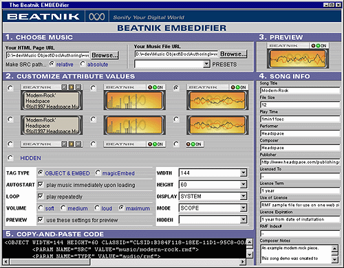

|
If you already know how to use the EMBEDifier, you can launch it now.
The Beatnik EMBEDifer is a free tool offered by Beatnik Inc. to make embedding background music in Web pages a snap. Use the convenient graphic interface to access all of the Beatnik Player's possible settings and customize your own EMBED / OBJECT tag in under a minute. The interactive interface gives you immediate feedback for each change that you make, and you can preview music files and control panel layouts before pasting the automatically generated HTML code into your Web page. You even get a useful display of an RMF file's song information each time you select a different file.
Have a look at the screenshot of the EMBEDifier interface below (not shown to size). Further below is a description of all the different frames that make up the user interface. Click on any frame inside the EMBEDifier screenshot to see an explanation of that frame's function.

In this frame you can choose the music file that you would like to embed in your HTML page. Just locating a music file on your local hard drive will allow you to preview the music file, but in order to create an appropriate relative link to the file, you should also locate the HTML page of your Web site in which you'd like to embed the music. As an alternative to choosing a music file, you can select one of the Groovoids built into the Beatnik Player's soundbank by using the "PRESETS" drop-down list. If you choose to embed a Groovoid, it is not necessary to locate the HTML page into which you plan to embed the Groovoid.
You can customize the way your Beatnik Player control panel will look by adjusting the attribute values in this frame. As you make changes they are reflected in the "3. PREVIEW" frame so you can more easily find the look that you want. Changing the volume setting also updates the "3. PREVIEW" frame, so you can hear just how loud the music will be when it is finally embedded into your Web page. Let's say you've found just the right settings for your EMBED / OBJECT tag and you have AUTOSTART set to false and VOLUME set to soft. Now, if you wish to browse for just the right file to play, these settings might not be good for previewing. You can temporarily uncheck the "use these settings for preview" option and preview files to find the right file. This option only affects the "3. PREVIEW" frame, so the automatically generated HTML code is still based on your custom settings.
Each time you select a new music file, or change one of the attributes for the EMBED / OBJECT tag using the "2. CUSTOMIZE ATTRIBUTE VALUES" frame, this frame is updated to reflect what the new EMBED / OBJECT tag will look like.
Each time you select a new music file in the "1. CHOOSE MUSIC" frame, this frame is updated with the new song information obtained from the file you selected. If you simply change an attribute value using the "2. CUSTOMIZE ATTRIBUTE VALUES" frame, then this frame is not updated. This information frame makes the Beatnik EMBEDifier a very convenient way to browse your local RMF files to preview them and also find out more info about them.
Once you have settled on just the right settings for your EMBED / OBJECT tag, you can copy the automatically generated HTML code from this frame and paste it into an appropriate spot inside your HTML document. Be sure to select all of the code. This can be done easily by clicking somewhere inside this frame and then pressing Ctrl-A (Command-A for Mac users) to select all of the contents. Then, press Ctrl-C (Command-C for Mac users) to copy all the contents to the clipboard. Be sure to paste the code only into the HTML page that you specified in the "1. CHOOSE MUSIC" frame, otherwise the relative link will not work correctly. The relative link will also work if the page you paste the code into is not the same as what you specified, but exists in the exact same directory. If you are embedding a Groovoid, then you needn't worry about this issue.
If you feel you now understand how to use the Beatnik EMBEDifier, you can launch it now.